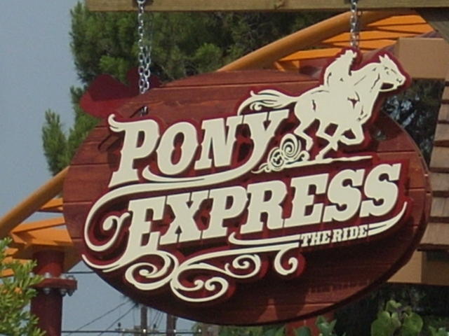

| |
Pony Express Review

Ok, so we're here at Knotts Berry Farm where we'll be reveiwing Pony Express. First you climb onto the plastic horse. Here's a tip of advice. If you don't want to be stapled, DON'T LEAN DOWN ON THE HORSE!!!!! LEAVE SOME ROOM BETWEEN YOU AND THE HORSE!!! Once the back part comes on your back, it's not going to feel good if you put all your weight on the front part (I learned this the hard way on Survivor at Californias Great America). Once that and the foot holders kick in, you are off and head over to the launch pad. The launch has broken Incrediblecoasters records for the weakest launch ever! Congratulations!!!!! =) After the launch, you head up into the horseshoe. You get a few laterals in the horseshoe. But not much. Then you head up into a small hill. This provides you with no force, then you twist and dip down and head into another hill. Once again, there are no forces on these hills. Then you go through a small overbanked turn in a tunnel, you get a few laterals in the tunnel. And it does feel cool in the moterbike position. Then you head for the brake run. Overall, there's not much to Pony Express other than the cool seating (And it's only cool if you don't staple yourself in). I will admit that it looks cool in the area though. I would only recommend riding this if you've never gotten the credit, you're just beginning to ride rollercoasters, or if there is no line. Wait a minute, what the f*ck am I talking about? PONY EXPRESS IS THE BEST RIDE EVER!!!!!! ANYBODY WHO DOESN'T LIKE THIS RIDE IS A PUSSY!!!!!!!! (For those who don't get the reference, it's a joke. My original review is completely true).
5/10
Location: Knotts Berry Farm
Opened: 2008
Built by: Zamperla
Last Ridden: March 20, 2022
Pony Express Photos





Home
|